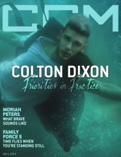
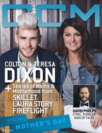
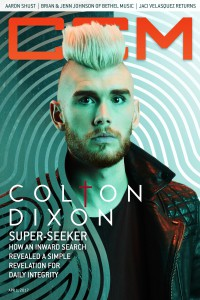

CMnexus
: Contemporary Christian culture, music, and media.
|
|
Colton DixonOn the cover|  | 1 August 2014
CCM Digital |
 | 1 May 2015
CCM Digital |
 | 1 April 2017
CCM Digital | Media coverage:- Jun 2013 in HM "It's Never Going to Work: Colton Dixon's 'IDOL' Afterlife", by David Stagg
- Jul 2013 in CCM Digital "Tour Spotlight: Miracle Tour, Life Changers International Church, Hoffman Estates, IL", by Andy Argyrakis
- 1 Jan 2014 in CCM Digital "Listen Up!", by Caroline Lusk
- 15 Mar 2014 in CCM Digital "Tour Spotlight: The Winter Jam 2014 Tour Spectular, Part Two", by Andy Argyrakis
- Aug 2014 in HM "Anchors Down", by David Stagg
- 1 Aug 2014 in CCM Digital "The Anchor Holds: Priorities In Practice", by Caroline Lusk
- 1 May 2015 in CCM Digital "Home Base: Colton Dixon's Strong Foundation", by Caroline Lusk
- 15 Dec 2015 in CCM Digital "Concert Review: TOBYMAC Continues To Set The Standard For Christian Music's Live Show - Performs Poignant NYC Tour Date Hours After Paris Attacks", by Justin Sarachik
- 1 Apr 2017 in CCM Digital "Super-Seeker", by Kevin Sparkman
Albums & reviews:2013: A Messenger2014: A Messenger: Expanded Edition2014: Anchor2015: The Calm Before The Storm2017: Identity Award Summary (Nominations / Wins)Dove Awards2014 Dove Awards2015 Dove Awards |
|